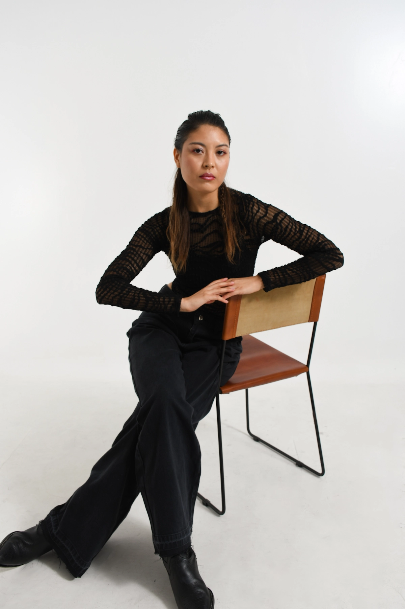

✦
Soft Gel
Extensión natural y flexible con acabado impecable. Ideal para quienes buscan longitud sin sacrificar comodidad. Se retoca cada 21 días.
Nail Studio · Rosario
Servicios profesionales en Rosario + Press On personalizadas

¿Quién soy?
Soy nail artist profesional con años de experiencia en el cuidado y embellecimiento de uñas. Mi pasión es hacer que cada clienta se sienta especial y segura con sus manos, porque creo que los pequeños detalles marcan la diferencia.
En Luxury Nails Rosario trabajo con productos de alta calidad, técnicas actualizadas y un enfoque personalizado: porque no todas las uñas son iguales, y el servicio tampoco debería serlo.
Lo que ofrezco
Cada servicio está pensado para un estilo de vida distinto. Encontrá el que mejor se adapta a vos.
Extensión natural y flexible con acabado impecable. Ideal para quienes buscan longitud sin sacrificar comodidad. Se retoca cada 21 días.
Capa de refuerzo sobre la uña natural que corrige imperfecciones, aporta resistencia y mejora la forma. No alarga la uña, sino que la protege y permite que crezca más fuerte y pareja.
Esmalte de larga duración sobre tu uña natural. Sin sumar rellenos o grosor. Perfecto para quienes priorizan uñas prolijas. Dura entre 15 y 21 días.
Diseños personalizados desde lo más sutil hasta lo más elaborado. Podés combinarlo con cualquier técnica.
Remoción segura del producto (gel, acrílico o semipermanente).
Se realiza con técnicas cuidadosas y productos adecuados, evitando limados agresivos o desprendimientos forzados.
Tienda
La solución perfecta para quienes no pueden (o no quieren) ir al salón. Uñas de diseño, sin alergia, sin daño, listas para usar.
Uñas postizas de alta calidad, diseñadas a mano, que se colocan con adhesivo o pegamento especial. No requieren cabina UV ni químicos.
Para quienes trabajan en entornos donde no se permiten uñas largas o esmalte, para menores de edad, personas con alergia a los geles, o quienes tienen poco tiempo.
Te enviamos una plantilla de medición por WhatsApp. Medís tus uñas y nos mandás los números. Así el set es a tu medida exacta.
Con el cuidado adecuado, entre 1 y 3 semanas. Son reutilizables si las retirás correctamente.
Preguntas frecuentes
Depende de la técnica y de tus cuidados. En servicios seguros se retocan cada 15 a 21 días. Yo te aviso cuándo conviene volver según tu tipo de uñas o estilo de vida, también podes agendar tu proxímo turno en el momento de tu servicio.
No, siempre y cuando las retirés correctamente (con agua tibia y aceite, sin forzarlas). Las press on son una de las opciones más amigables para la uña natural.
El soft gel se aplica en el salón, requiere cabina UV y dura más. Las press on son postizas que te ponés sola en casa, sin químicos, ideales para alérgicas, menores o quienes tienen poco tiempo.
Sí. Las press on son la alternativa perfecta: no contienen los monómeros que suelen causar alergias. También podemos ver si el semipermanente sobre tu uña natural es una opción para vos.
Sí. Realizamos envíos. Consultá disponibilidad y costos por WhatsApp o visitanos en el local.
Para servicios en el salón recomendamos esperar a un mayor desarrollo. Para menores, las press on son la opción más segura y divertida.
Hablemos
Ya sea para reservar un turno, consultar por las press on o simplemente saber más, estoy a un mensaje de distancia.
Martín Rodriguez 505 · Rosario, Santa Fe
Rosario y alrededores · Consultar por envíos al interior
Martes a sábado · Con turno previo